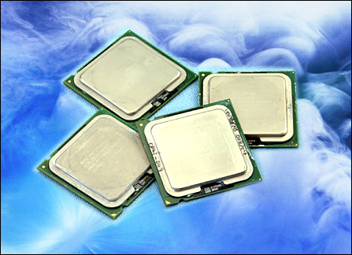

新闻主页 » 科技新闻
避开攒机误区 本周四款CPU不值得购买
2016-10-02 17:00:23

眼下暑促已经接近尾声，许多假期里选择出游的朋友，现在已开始陆续返回家中，学生朋友也将要回校继续完成学业。随着返回北京人员的增多，加上7月份处理器大降价造成许多用户进入观望状态，8月末中关村市场上用户需求将会所提升。按照往年惯例，在9月份学生返校前后，中关村市场上还会出现一波装机热潮。
既然新的装机热潮又将来临，那么用户在购买前有哪些事情需要注意呢？最近我们提供给大家的多是一些值得选购的产品，而且有些产品因降价频繁，曝光度也比较高。今天笔者将为大家带来不一样的选购指导，即哪些处理器不值得选购？然而再看看有没有什么好的替代产品？ 中关村市场行情瞬息万变
近期中关村市场行情变动频繁，这主要与处理器厂商调整市场策略有关。 首先是英特尔大幅调低四核处理器价格，进一步巩固高端市场的领导地位。其次是英特尔开始主推1333MHz前端总线的酷睿2处理器，此前支持1066MHz前端总线的酷睿2处理器将逐步退市。第三是酷睿2 E4XXX系列处理器做出新调整，酷睿2 E4300处理器停产，继而用“酷睿2 E4400/E4500处理器”两款新品来代替。
第四是AMD停产双核3600+/3800+处理器，市场缺货严重，价格上涨。第五是AMD双核4000+处理器供货严重不足，价格大幅上涨。第六是AM2速龙处理器退市临近，市场只有速龙3500+处理器有少量现货，其余缺货严重，整体状况不如AM2闪龙处理器乐观，这也与之前AMD制订的路线图相吻。
正是由于以上调整，使得一些处理器的角色正在悄然发生着转变。有的将会面临降价，有的很可能买不到，而有的则不如新品性价比高。
既然新的装机热潮又将来临，那么用户在购买前有哪些事情需要注意呢？最近我们提供给大家的多是一些值得选购的产品，而且有些产品因降价频繁，曝光度也比较高。今天笔者将为大家带来不一样的选购指导，即哪些处理器不值得选购？然而再看看有没有什么好的替代产品？ 中关村市场行情瞬息万变
近期中关村市场行情变动频繁，这主要与处理器厂商调整市场策略有关。 首先是英特尔大幅调低四核处理器价格，进一步巩固高端市场的领导地位。其次是英特尔开始主推1333MHz前端总线的酷睿2处理器，此前支持1066MHz前端总线的酷睿2处理器将逐步退市。第三是酷睿2 E4XXX系列处理器做出新调整，酷睿2 E4300处理器停产，继而用“酷睿2 E4400/E4500处理器”两款新品来代替。
第四是AMD停产双核3600+/3800+处理器，市场缺货严重，价格上涨。第五是AMD双核4000+处理器供货严重不足，价格大幅上涨。第六是AM2速龙处理器退市临近，市场只有速龙3500+处理器有少量现货，其余缺货严重，整体状况不如AM2闪龙处理器乐观，这也与之前AMD制订的路线图相吻。
正是由于以上调整，使得一些处理器的角色正在悄然发生着转变。有的将会面临降价，有的很可能买不到，而有的则不如新品性价比高。
» 新闻点评